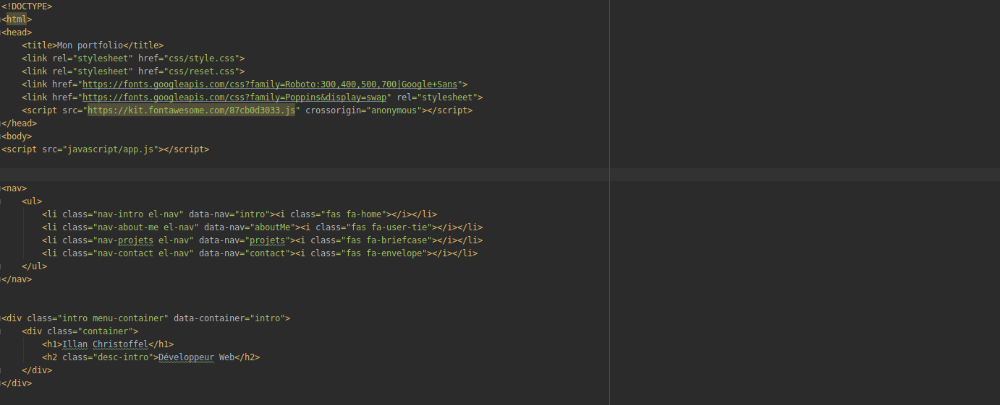

Portfolio


A travers ce projet, j'ai appris les bases du langage HTML et CSS. J'ai appris à créer des listes, des menus, à gérer des éléments dans des "class", importer des images, créer des liens etc..
Après avoir codé en HTML, j'ai utiliser deux fichiers CSS.
-Un reset
-Un second ou j'ai placé mes codes de style
Voici une capture d'écran vous montrant une partie de mon code.

Plusieurs projets m'ont vraiment passionné notamment les TP concernant les "Evenements Swing"
Voici une capture d'écran vous montrant une partie du code du 1er TP.


-Codé en PHP avec le framework CodeIgniter, qui prend comme forme le modèle MVC (Modèle-vue-controleur)
- SBGD : Postgresql
Pour réaliser ce projet, nous nous sommes répartis en 2 groupes de 2 personnes afin de répartir les tâches présenter sous forme de PPE
J'ai appris à créer une base de donnée avec PHPMYADMIN, y gérer une table et ses élements.
J'ai appris à manipuler deux SGBD (Système de gestion de bases de données) :
-Mysql
-Postgresql
En plus d'apprendre à créer une base de donnée, j'ai appris à écrire des requêtes SQL via le terminale de commande via PHPMYADMIN où dans mes codes PHP.
Le SQL m'a permis d'ajouter des fonctionnalités à mes projets afin de les concretiser.
J'ai appris à créer des variables, des fonctions mais aussi comment utiliser le javascript orienté objet.
Dans ce langage, il y a moins de conventions à respecter et il est très utile. Dans ce portfolio, j'ai eu recours au javascript afin de créer quelques fonctions et animations.
En plus des conseils que l'on m'a apportés, j'ai fait de la veille afin de consolider mes bases.
Afin de tester mes connaissances, j'ai utilisé le sites internet OpenClassrooms.com et Freecodecamp.org
Durant ce stage, ma mission était de créer un nouveau site pour l'association. J'ai donc décider d'utiliser le framework Wordpress. J'ai décidé d'utiliser Wordpress car je n'avais pas assez de maîtrise en HTML/CSS ou même PHP afin de confectionner à 100% un site internet en 5 semaines.
Afin d'être le plus optimal possible, j'ai demandé à ma tutrice, les textes à intégrer et leurs positionnement, les images/vidéos, les couleurs choisis etc... Avec les ressources acquises au-près d'elle je pouvais désormais commencer à travailler tout en lui partageant mon avancé afin d'être au point pour continuer d'avancé sereinement.
J'ai décider d'utiliser un plugin nommé Elementor afin de faciliter la création du site.
Le plugin Elementor est payant et je travaillais pour une association à but non lucratif et il m'était donc impossible de travailler avec toutes les ressources de ce plugin, notamment la mise à disposition de template.
J'ai donc eu l'idée' d'ajouter un élement texte en y supprimant son contenu. J'ai ensuite ajouter un fond de couleur (ici blanc) afin de le placer ou je le voulais en jouant avec les padding négatif afin d'agrandir comme je le souhaitais la zone de texte. Celle-ci était donc fixé et j'ai donc pu par la suite y ajouter un menu, du texte, des images, etc... afin de concevoir la première page du site.
J'ai dupliquer ma première page afin de pouvoir renommé le double en une autre page et pouvant ainsi modifier son contenu afin de créer une arborescense complète.
Ma tutrice voulait que le site sois adaptatif et donc s'adapté aux mobiles et tablettes. Elementor possède un menu afin de gérer les marges et élements s'y trouvant dedans, afin de créer un site 100% responsive et adaptatif.
Ma période de stage s'est terminée sans que je puisse achever le site internet. Ma tutrice à donc décider de ne pas le garder, mais j'en garde une bonne experience car j'ai pu appronfondir mes bases en HTML et gagner en autonomie.
J'ai commencé mon stage par une formation au langage HTML/CSS avec la refonte total de mon portfolio (ce site-même) et au langage javascript.
J'ai b
J'ai décider d'utiliser un plugin nommé Elementor afin de faciliter la création du site.
Le plugin Elementor est payant et je travaillais pour une association à but non lucratif et il m'était donc impossible de travailler avec toutes les ressources de ce plugin, notamment la mise à disposition de template.
J'ai donc eu l'idée' d'ajouter un élement texte en y supprimant son contenu. J'ai ensuite ajouter un fond de couleur (ici blanc) afin de le placer ou je le voulais en jouant avec les padding négatif afin d'agrandir comme je le souhaitais la zone de texte. Celle-ci était donc fixé et j'ai donc pu par la suite y ajouter un menu, du texte, des images, etc... afin de concevoir la première page du site.
J'ai dupliquer ma première page afin de pouvoir renommé le double en une autre page et pouvant ainsi modifier son contenu afin de créer une arborescense complète.
Ma tutrice voulait que le site sois adaptatif et donc s'adapté aux mobiles et tablettes. Elementor possède un menu afin de gérer les marges et élements s'y trouvant dedans, afin de créer un site 100% responsive et adaptatif.
Ma période de stage s'est terminée sans que je puisse achever le site internet. Ma tutrice à donc décider de ne pas le garder, mais j'en garde une bonne experience car j'ai pu appronfondir mes bases en HTML et gagner en autonomie.
La veille technologique comprend plusieurs choses comme la collecte, le partage et la diffusion d’informations, permettant d’anticiper ou de s’informer sur des changements en matière de Recherche, Développement, Brevet, Lancement de nouveaux produits, matériaux, processus, concepts, innovation de fabrication, etc…, afin d’évaluer l’impact sur l’environnement et l’organisation.
La veille technologique impliquera de surveiller et d’analyser, notamment l’information scientifique, technique, mais aussi les tendances et analyses prospectives afin de détecter au mieux les cycles et les ruptures.
J'ai effectué ma veille durant mes 2 ans de BTS en utilisant differents moyens de prendre de
l'information et d'améliorer mes compétences.
A5.2.3 Repérage des compléments de formation ou d’auto-formation utiles à l’acquisition de nouvelles compétences.
A5.2.4 Étude d‘une technologie, d’un composant, d’un outil ou d’une méthode.